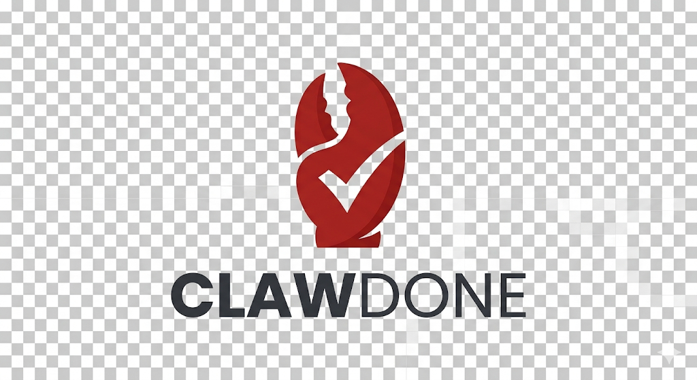

远程连接和目标管理
Mobile-first · SSH · tmux · AI Agents
用手机远程控制你的 coding agents
ClawDone 把手机浏览器、SSH 和远程 tmux pane 连接起来，让你随时查看 agent 状态、发送命令、中断任务、抓取输出，并跟踪轻量任务流。
- 连接远程 Linux 服务器上的 tmux pane
- 在手机上调度 Codex 或其他 vibe-coding agents
- 内置任务、审计和风险策略

Agent status
3 panes online
Risk policy
confirm before dangerous commands
会话、窗口、pane 级别控制
针对手机浏览器优化的控制界面
任务证据、日志和轻量工作流
What it does
为远程 AI 开发流程准备的控制面板
不是完整远程桌面，而是一个更适合手机端的薄控制层：够快、够轻、够清晰。
远程目标管理
保存多个 SSH target，支持分组、标签、收藏、备注以及 SSH 覆盖参数。
tmux 精准控制
列出 session、window、pane，把 pane 直接视为 agent endpoint 并发送命令或 Ctrl+C。
移动优先交互
支持命令模板、命令历史和浏览器语音转文字，减少手机输入摩擦。
任务与审计
把输出片段、摘要和状态变更留在任务记录里，方便回看与交付。
角色与风险策略
支持 Bearer Token、RBAC 和危险命令 allow / confirm / deny 策略。
开放源码
Python 3.11+ 项目，适合作为个人远程 agent 控制台或二次开发基础。
Workflow
从手机到 agent 的最短链路
1
Mobile Browser
在手机浏览器打开 ClawDone 控制台。
2
ClawDone Service
Web 服务负责认证、任务状态和命令下发。
3
SSH + tmux
通过 SSH 接管远程 tmux pane，发送命令并抓取输出。
4
Coding Agent
Codex 或其他 coding agents 接收任务并持续执行。
Use cases
适合这些真实场景
路上也能派活
离开电脑后，仍可以从手机给远程 agent 安排实现任务、跑测试或继续修 bug。
多 agent 并行调度
为不同 pane 绑定别名，例如 backend-agent、research-agent、release-bot。
轻量任务交付
把 todo、证据和输出摘要保存在同一界面，方便回溯和状态同步。
Quick start
三步跑起来
1. 安装
python3 -m venv .venv
. .venv/bin/activate
python -m pip install -e .2. 启动服务
python -m clawdone serve \
--host 0.0.0.0 \
--port 8787 \
--token your-secret3. 打开手机浏览器
http://<server-ip>:8787Project links